Escolha uma região no menu abaixo para saber mais sobre seus elementos,
Arcontes e cultura!
Snezhnaya
Conhecendo Snezhnaya
Snezhnaya é uma das grandes nações de Teyvat e é conhecida por suas
paisagens congeladas, grandes cidades e forte presença da tecnologia.
A região possui uma grande variedade de ambientes, desde tundras
cobertas de neve até áreas montanhosas e vales com paisagens
diferentes.
O elemento associado a Snezhnaya é o Cryo. A nação é governada pela
Tsaritsa, a Arconte Cryo, e possui uma forte ligação com os Fatui, uma
das organizações mais importantes da história de Teyvat.
Mesmo sendo conhecida principalmente pelo frio e pela neve, Snezhnaya
possui diferentes paisagens. Algumas áreas apresentam florestas,
montanhas, cavernas e até regiões com vegetação diferente do restante
da nação.
Snezhnaya é dividida em cinco grandes áreas exploráveis, cada uma
contendo diferentes locais e subáreas importantes para a exploração da
região.
Principais áreas de Snezhnaya
Snezhnaya é formada por diferentes áreas, cada uma com suas próprias
paisagens, características e locais importantes.
Everfrozen Earth é uma das principais áreas de Snezhnaya e abriga
importantes locais da região. A área é marcada pelo ambiente
congelado e por estruturas importantes para a vida e a organização
da nação.
Subáreas: Central Station, Druzhna HQ, Glupov,
Morepesok, Sanctuary of Grief, Snezhograd, Svetloledovka, The
Korolevskiy Theater, Zapolyarny Palace.
Central Station
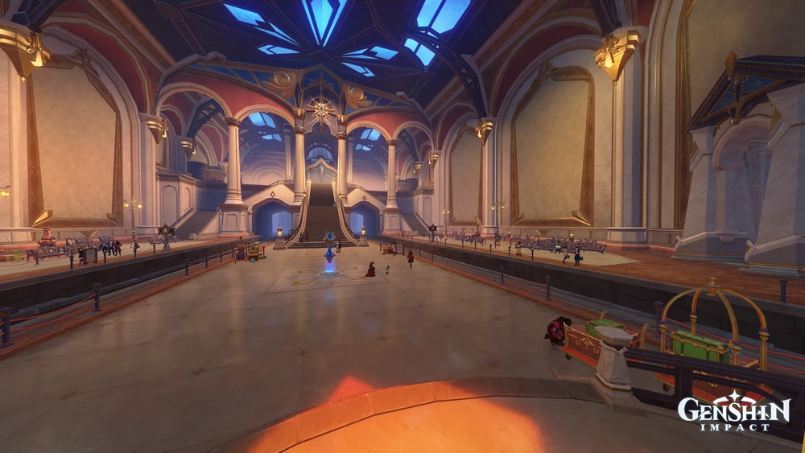
Imagem: GenshinImpactWiki
A Central Station é uma importante estação de transporte de
Snezhnaya, conectando diferentes pontos da região.
Druzhna HQ
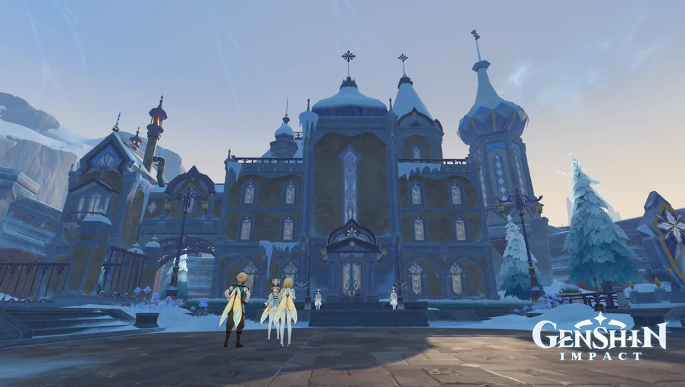
Imagem: GenshinImpactWiki
Druzhna HQ é uma área ligada às atividades e organizações presentes
em Snezhnaya.
Glupov
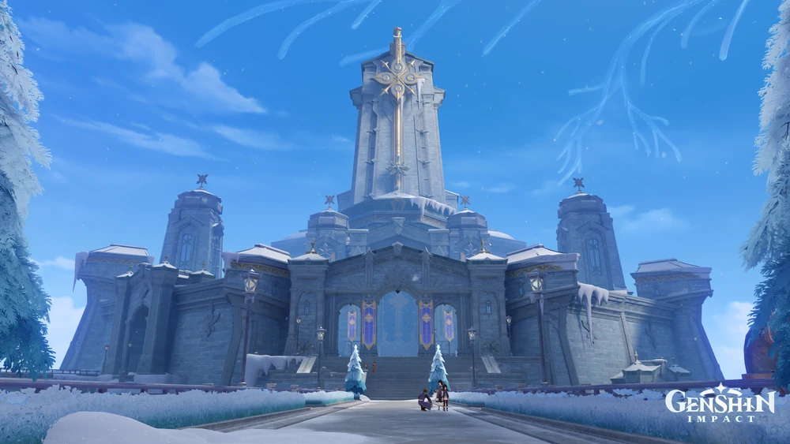
Imagem: GenshinImpactWiki
Glupov é uma das localidades encontradas em Everfrozen Earth,
fazendo parte das áreas habitadas da região.
Morepesok
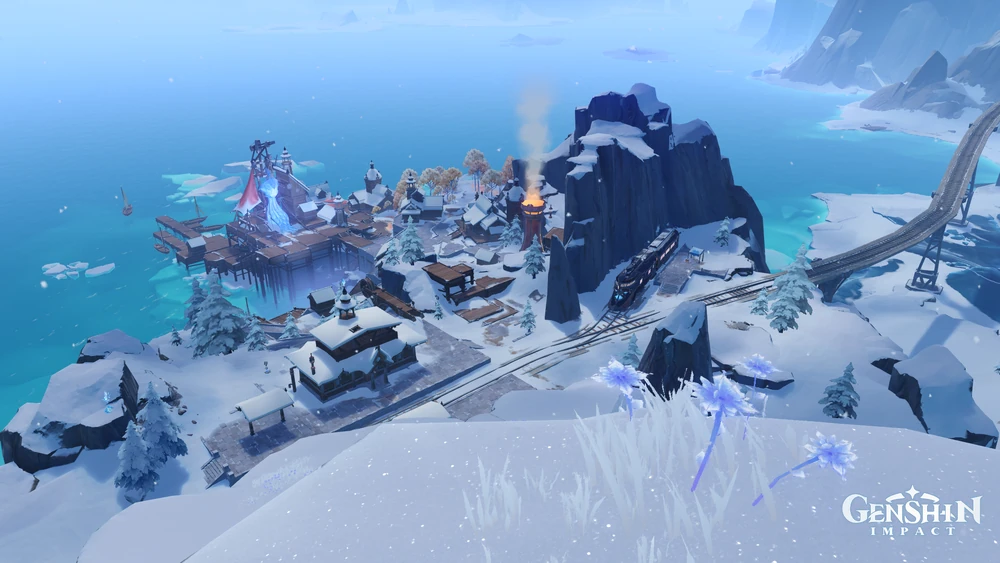
Imagem: GenshinImpactWiki
Morepesok é uma localidade de Snezhnaya que apresenta
características próprias dentro da paisagem congelada da região.
Sanctuary of Grief
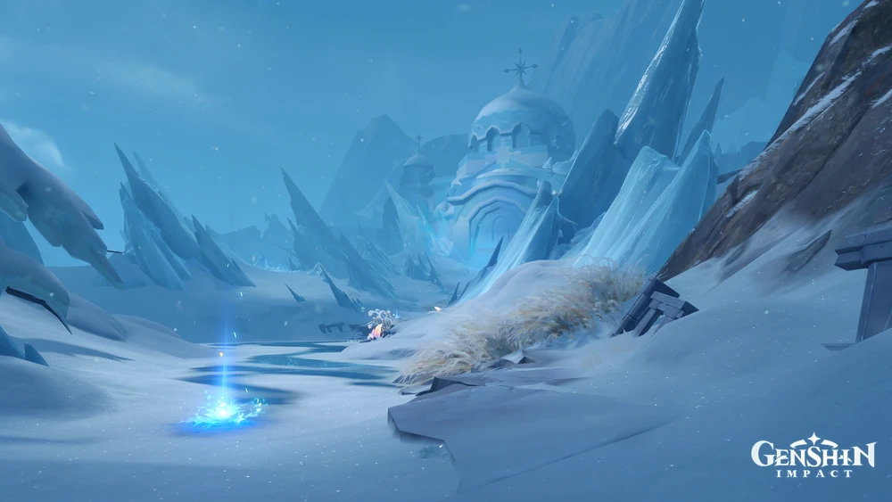
Imagem: GenshinImpactWiki
Sanctuary of Grief é um local de importância dentro de Snezhnaya,
associado à atmosfera mais sombria e misteriosa da região.
Snezhograd
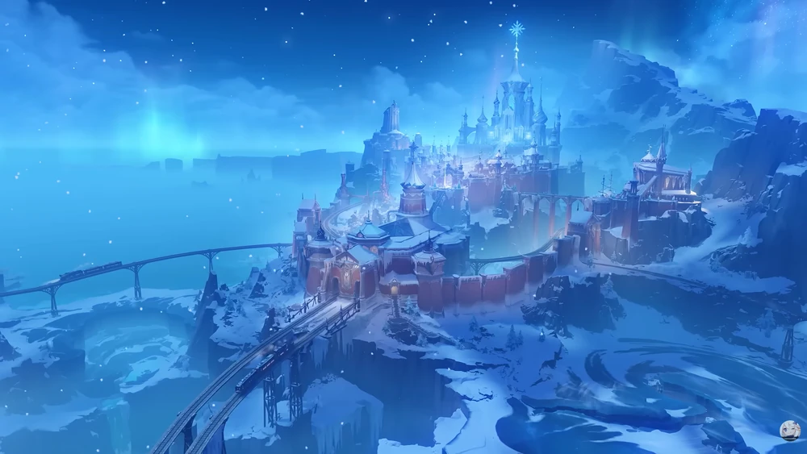
Imagem: GenshinImpactWiki
Snezhograd é uma das principais cidades de Snezhnaya e um dos locais
mais importantes para compreender a organização da nação.
Svetloledovka
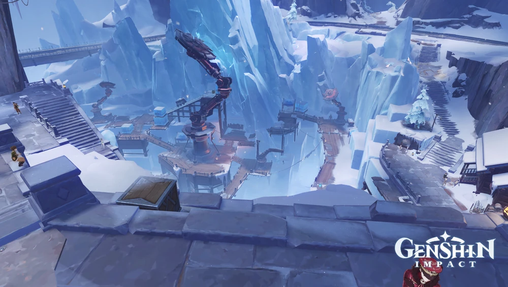
Imagem: GenshinImpactWiki
Svetloledovka é uma localidade presente em Snezhnaya, conhecida por
fazer parte das áreas habitadas da região.
The Korolevskiy Theater
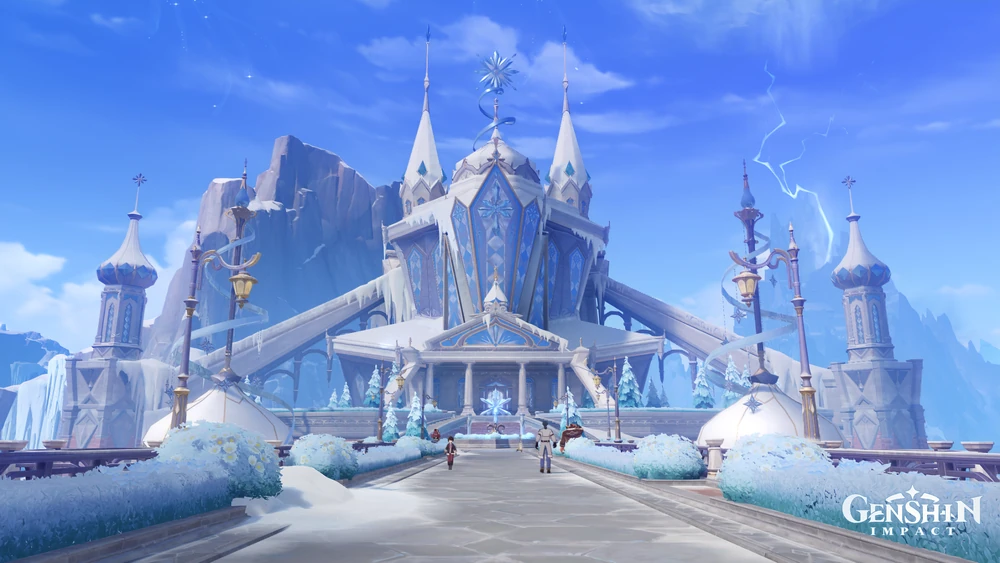
Imagem: GenshinImpactWiki
The Korolevskiy Theater é um importante local cultural de Snezhnaya,
ligado às atividades e histórias encontradas na região.
Zapolyarny Palace
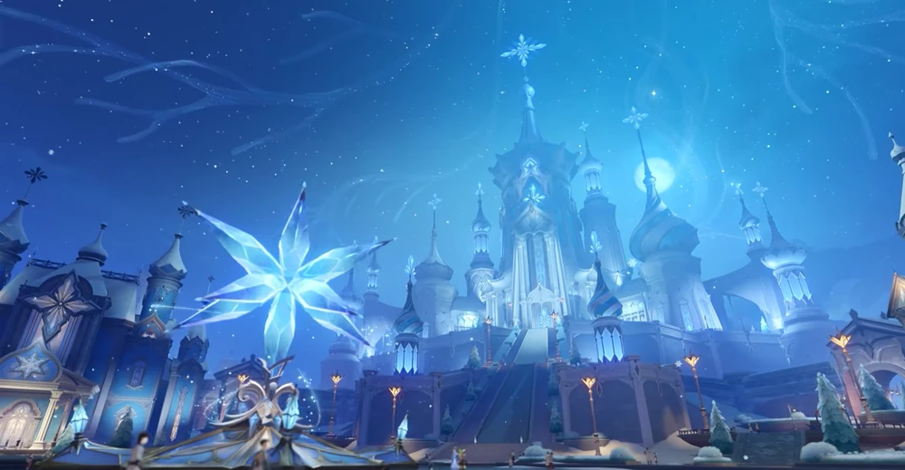
Imagem: GenshinImpactWiki
Zapolyarny Palace é um dos locais mais importantes de Snezhnaya,
associado à Tsaritsa e aos Fatui.
2. Fellfrost Peak
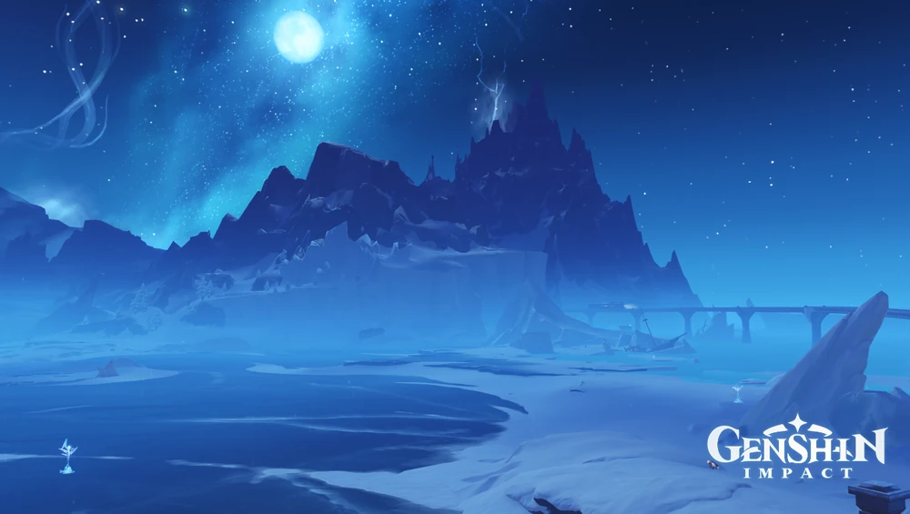
Imagem: GenshinImpactWiki
Fellfrost Peak é uma área montanhosa de Snezhnaya localizada na
região sudeste. Seu terreno possui grandes áreas congeladas e
montanhas que tornam a exploração mais difícil.
Subáreas: House of Hesperides, Jack Frost Village,
Tidesong Cavern.
House of Hesperides
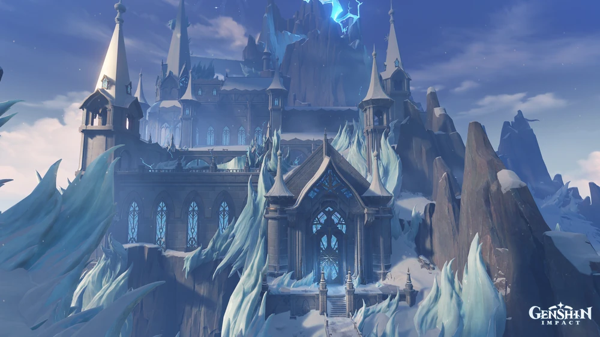
Imagem: GenshinImpactWiki
House of Hesperides é uma importante localização de Fellfrost Peak,
relacionada a acontecimentos e missões presentes em Snezhnaya.
Jack Frost Village
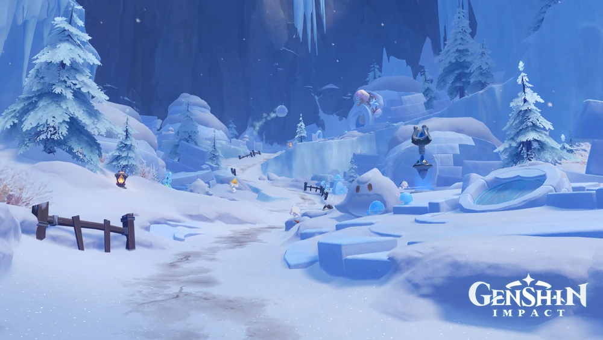
Imagem: GenshinImpactWiki
Jack Frost Village é uma vila localizada na região montanhosa de
Fellfrost Peak.
Tidesong Cavern
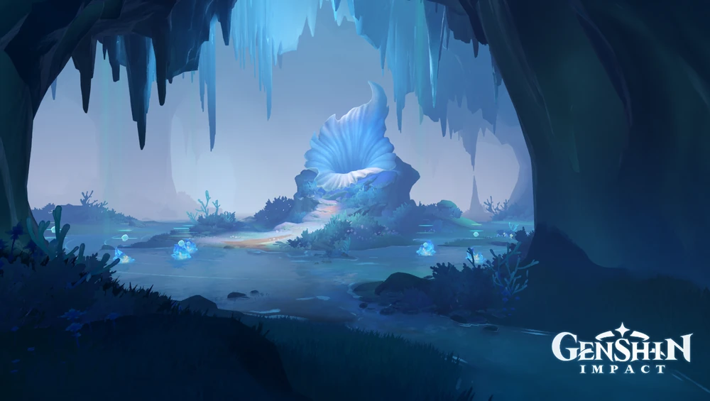
Imagem: GenshinImpactWiki
Tidesong Cavern é uma caverna localizada em Fellfrost Peak,
oferecendo uma área subterrânea para exploração.
3. Flamefeather Valley
Imagem: GenshinImpactWiki
Flamefeather Valley é uma área de Snezhnaya que se diferencia das
regiões predominantemente congeladas. Sua paisagem apresenta uma
aparência mais quente e cores avermelhadas, criando um contraste com
o restante da nação.
Subáreas: Okurov, Teeming Mire.
Okurov
Imagem: GenshinImpactWiki
Okurov é uma importante área localizada em Flamefeather Valley,
apresentando ambientes diferentes das regiões cobertas por neve.
Teeming Mire
Imagem: GenshinImpactWiki
Teeming Mire é uma área de terreno úmido localizada em Flamefeather
Valley, contribuindo para a variedade de ambientes de Snezhnaya.
4. Volkodlak Tundra
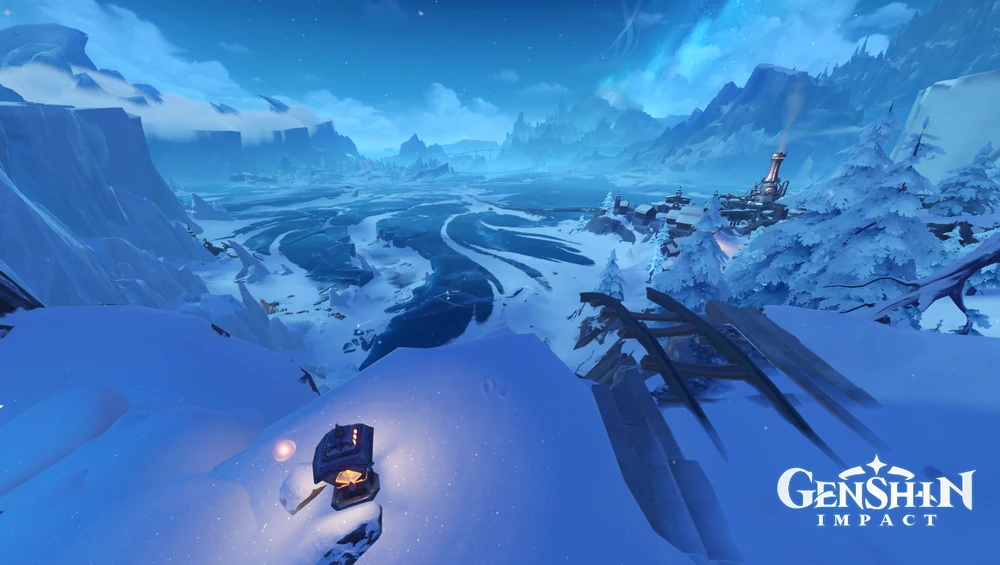
Imagem: GenshinImpactWiki
Volkodlak Tundra é uma das principais áreas de Snezhnaya e uma das
primeiras regiões importantes encontradas pelo Viajante ao explorar
a nação.